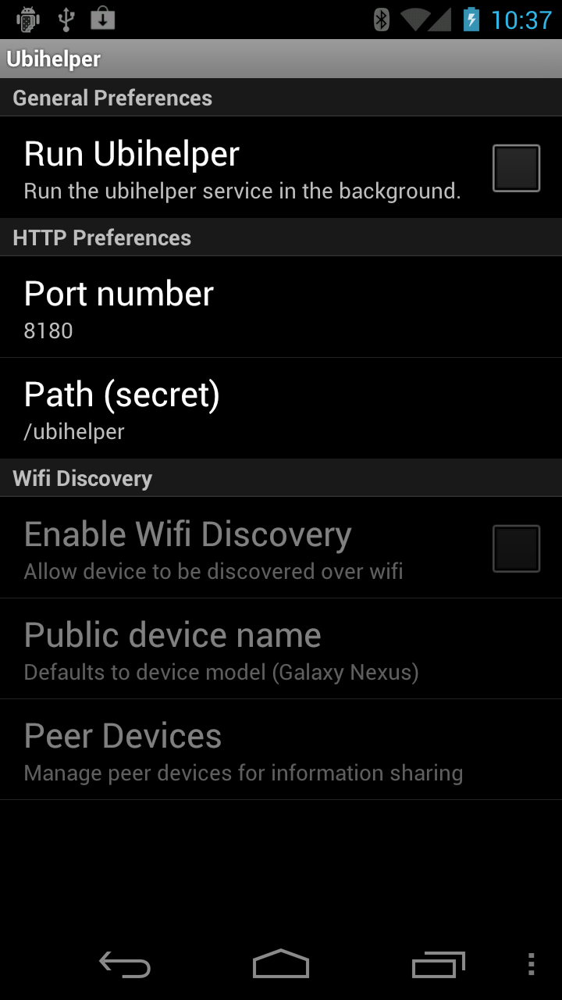
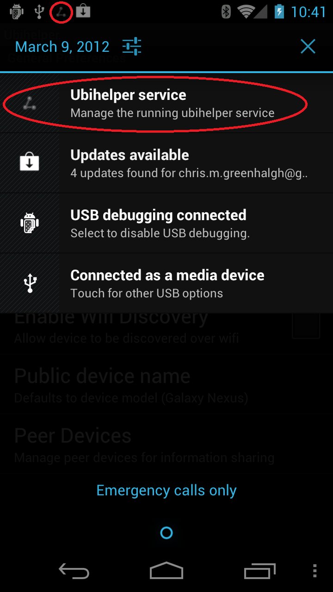

Chris Greenhalgh, 2012-03-09. Version 1.0.
For people who are using an application developed using ubihelper, and for other people doing the initial installation and set-up of Ubihelper.
Ubihelper is not current available in the Android market (now Android play); at some point it may be, in which case use that by default.
Otherwise, you will have been given a URL for the application (a ".apk") file. To install an application outside the Android market you will need to:
Enter the provided URL into the mobile browser, which should start to download the application. Pull down the notification view and selectthe downloaded file. The phone will ask whether to install the application; confirm.
Note: if you have previously installed a different version of the application then you may need to uninstall the old version before the new version will install. This is done from (Android 2) "Settings" -> "Applications" -> "Manage Applications" or (Android 4) "Settings" -> "Apps". Select ubihelper from the "Downloaded" list, select "Uninstall" and confirm.
Once installed (above), Ubihelper should appear in the application list; tap the icon to launch ubihelper. E.g. (Android 4)
Ubihelper's own main view is a preferences screen. This allows you to turn ubihelper on and off, and set other options:

Turn ubihelper on before running an application that uses it. You may want to turn ubihelper off at other times in order to save battery.
Note: If you find that the battery is still running down faster than it should after you have turned ubihelper off then you can "force close" it.This is done from (Android 2) "Settings" -> "Applications" -> "Manage Applications" or (Android 4) "Settings" -> "Apps". Select ubihelper from the "Downloaded" list, select "Force stop" and confirm. Hopefully you won't need to do this!
While ubihelper is running it will display a status notification; you can select this notification to open and manage (e.g. turn off) the ubihelper service:

You should not need to change the other settings for normal stand-alone use.